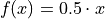
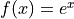
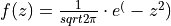
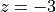
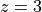
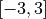

Monte Carlo Simulation#
‘Tis but fortune. All is fortune.
—William Shakespeare, The Twelfeth Night
Monte Carlo Simulation is a modelling technique from statistics with many applications in different fields. The essence of Monte Carlo Simulation lies in interpretting randomly generated numbers as outcomes in an experiment. In this project, we will take a look at several ways of using the interpretation of random numbers to model physical processes in order to estimate quantities of interest.
Instructions#
1. Create a Python .py script named LASTNAME_FIRSTNAME_project_eight.py in your Linux Files folder on your file system. You can do this by opening an IDLE session, creating a new file and then saving it. Replace LASTNAME and FIRSTNAME with your last and first name, respectively.
3. Create a docstring at the very top of the script file. Keep all written answers in this area of the script.
4. Read the Background section.
5. Perform all exercises and answer all questions in the Project section. Label your script with comments as indicated in the instructions of each problem.
6. When you are done, zip your script and the csv file in a zip file named LASTNAME_FIRSTNAME_project_eight.zip
7. Upload the zip file to the Google Classroom Project Four Assignment.
Background#
Integration#
In calculus, integration is a technique for finding the area under a curve  . Monte Carlo Simulation gives us an alternative way of approaching the same set of problems. According to the Classical Definition of Probability,
. Monte Carlo Simulation gives us an alternative way of approaching the same set of problems. According to the Classical Definition of Probability,

Where  is the total number of outcomes that belong to the event
is the total number of outcomes that belong to the event  and
and  is the total number of outcomes in the entire sample space. This definition applies to discrete events. When the events in question are continuous, we adjust the interpretation of to mean the relative area of the event as compared to the area of the total sample space .
is the total number of outcomes in the entire sample space. This definition applies to discrete events. When the events in question are continuous, we adjust the interpretation of to mean the relative area of the event as compared to the area of the total sample space .
By simulating all the outcomes in  and determining which belong to , we can estimate the area of the event . This simple idea underlies everything that follows.
and determining which belong to , we can estimate the area of the event . This simple idea underlies everything that follows.
Estimating Pi#
To see this technique in action, let’s look at a simple example. Consider a cirlce inscribed in a square of with a side of length 1, centered at the origin  .
.
TODO
Due to the Law of Large Numbers, as the number of simulations increases, the approximation of  converges to its true value.
converges to its true value.


Areas Under Curves#
The same technique used to estimate can be applied to an arbitrary curve . Take the example of the following linear function on the interval ![[0,1]](../../_images/math/a05f4eae491f5062b09f3c1b0e391f8c6f3d4b02.png) ,
,

(TODO: insert picture)
From the graph, we see the area can be calculated using the formula for the area of a triangle. The base of the triangle is  and the height of the triangle is
and the height of the triangle is  , which leads to an exact area of,
, which leads to an exact area of,

Let us apply the technique of Monte Carlo integration to see how we can use random number generation to approximate this value. While this simple example can be calculated exactly using geometrical arguments, the area under the curve of more complicated function is not so easily determined; the universality of Monte Carlo integration can nevertheless be applied to an arbitrary curve without alteration.
TODO
Project#
TODO
Use Monte Carlo Integration to estimate the area under the curve
 from
from  to
to  .
.
The actual value of the area is . About how many simulations do you have to perform in order to get within two decimal places of accuracy?
Use Monte Carlo Integration to estimate the area under the curve  from
to .
The actual value of the area is
 . About how many simulations do you have to perform in order to get within two decimal places of accuracy?
. About how many simulations do you have to perform in order to get within two decimal places of accuracy?
Use Monte Carlo Integration to estimate the area under the curve  from  to 
Hint
This function is the Standard Normal density function! Think about what the empirical rule says about the percentage of the distribution that is contained in the interval .
The actual value of this area is . About how many simulation do you have to perform in order to get within two decimal places of accuracy?